00:02为了拟合逻辑回归模型的参数，我们将尝试找到能最小化代价函数关于 w 和 b 的值的参数 w。

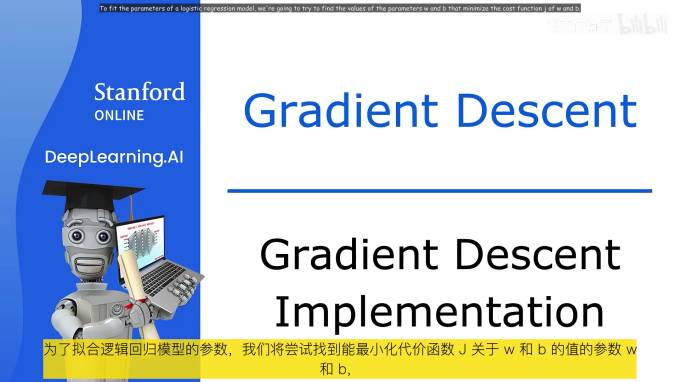
00:13我们仍会应用梯度下降来实现这一点。
00:20在本视频中，我们将聚焦于如何为参数 w 和 b 找到好的选择。

00:28如果你给模型一个新的输入 x，比如医院里来了一位新病患，他有特定的肿瘤大小和年龄，需要做出诊断，那么模型就可以做出预测，或者说它可以尝试估计标签为一的概率。
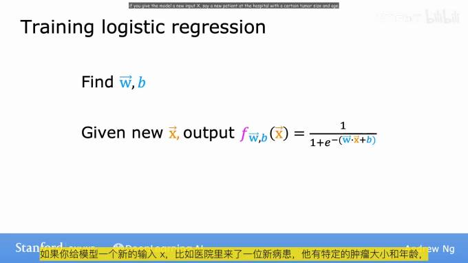
00:48你可以用来最小化代价函数的算法就是梯度下降。

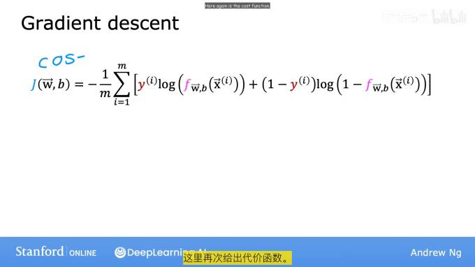
00:56所以如果你想最小化关于 w 和 b 的代价函数 J，那么，这就是常规的梯度下降算法，你重复更新每个参数，用 l 旧值减去 alpha，也就是学习率，乘以这个导数项。
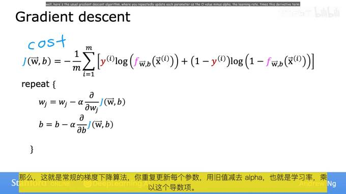

01:17我们来看一下关于 wj 的导数，也就是上面这一项，照常，j 的取值范围是从一到 n，其中 n 是特征的数量。
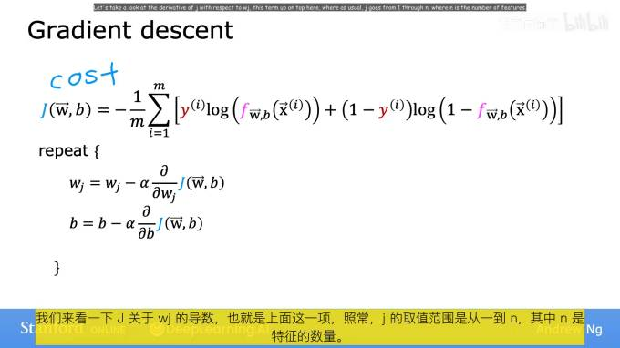
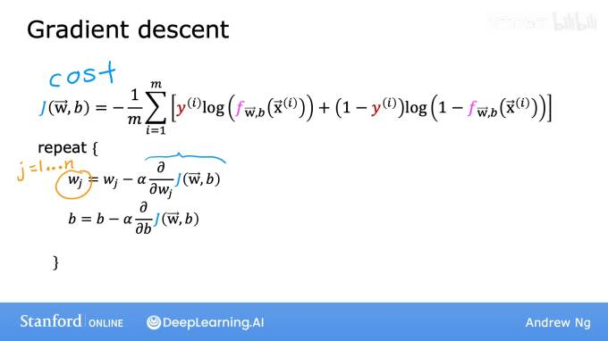
01:30如果有人应用微积分法则，你可以证明代价函数大写关于 wj 的导数等于这里的这个表达式。
01:43它是 m 分之一乘以从一到 m 求和的这个误差项，即 f 减去标签 y 再乘以 xj。
01:59这里，这个 xij 是第 i 个训练样本的第 j 个特征。
02:07现在，我们也来看一下 J 关于参数 b 的导数。
02:12结果就是这里的这个表达式，它和上面的表达式非常相似，除了末尾没有乘以这个带有上标 i 下称 j 的 x。
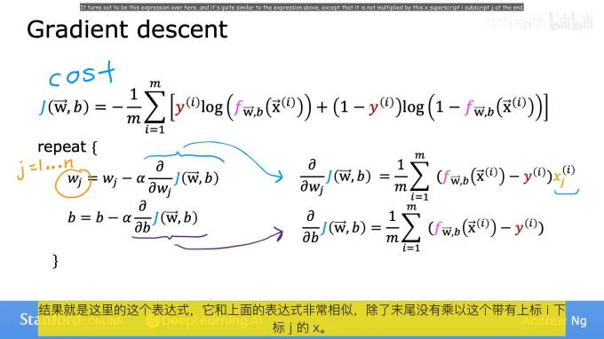

02:26提醒一下，与你在线性回归中看到的类似，执行这些更新的方式是要使用同步更新，意味着你会先为所有这些更新计算右侧的值。
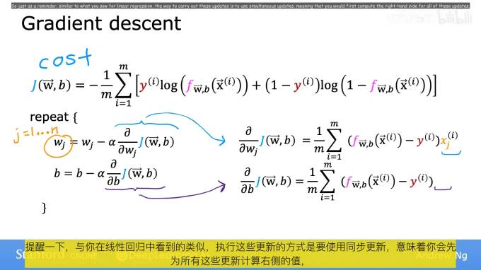
02:39然后同时覆写左侧所有的值。
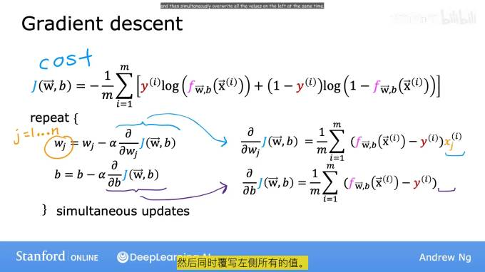
02:46那么，让我把这些导数表达式拿过来，代入到这些项中。
02:54这就给出了逻辑回归的梯度下降。
03:00现在，你可能会好奇一件有趣的事，这两个方程看起来和我们之前为线性回归想出的算法一模一样。

03:13所以你可能会想，线性回归是不是实际上就等同于逻辑回归？
03:19嗯，尽管这些方程看起来一样，但这不是线性回归的原因在于，函数 f 的定义已经变了。
03:31在线性回归中，x 的 f 是这样的，是 wx 加 b，但在逻辑回归中，f 被定义为应用于 wx 加 b 的函数。
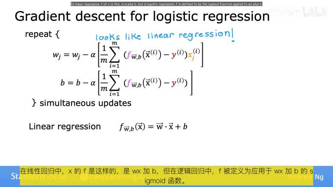
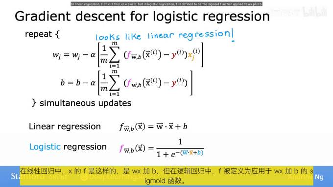
03:44所以尽管写出来的算法在线性回归和逻辑回归中看起来相同，但实际上它们是两个非常不同的算法，因为关于 x 的 f 的定义不同。

03:58当我们之前讨论线性回归的梯度下降时，你看到了如何监控梯度下降以确保它收敛。
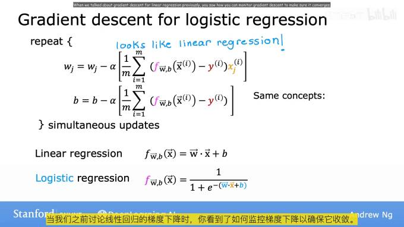
04:07你可以对逻辑回归应用同样的方法来确保它也能收敛。
04:14我写出这些更新式时，像是你每次更新参数 wj 中的一个参数。
04:24与讨论线性回归的向量化实现类似，你也可以使用向量化来让逻辑回归的梯度下降运行得更快。
04:37我不会在这个视频中深入探讨向量化实现的细节，但你也可以在选修实验中了解更多并看到相关代。
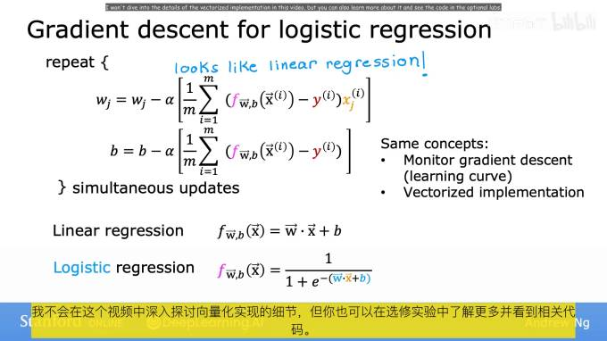
04:48那么现在，你知道了如何为逻辑回归实现梯度下降。

04:54你可能还记得我们在使用线性回归时的特征缩放，你看到了特征缩放，也就是将所有特征缩放到相 a 似的值范围，比如负一到正一之间，这如何能帮助梯度下降更快地收敛。
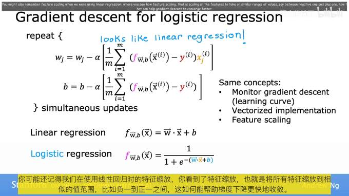
05:12以同样的方式应用特征缩放，将不同特征缩放到相似的值范围，也可以加速逻辑回归的梯度下降。
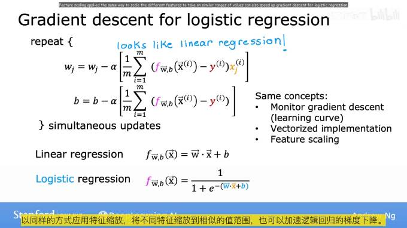
05:22在接下来的选修实验中，你也会看到逻辑回归的梯度是如何在代码中计算的。
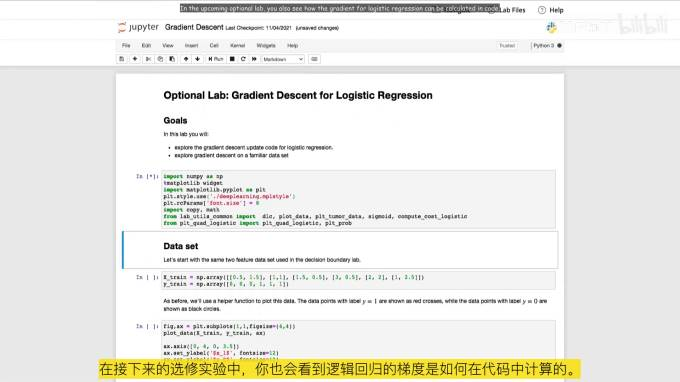

05:31这会很有用，因为你将在本周结束时的练习实验中实现它。
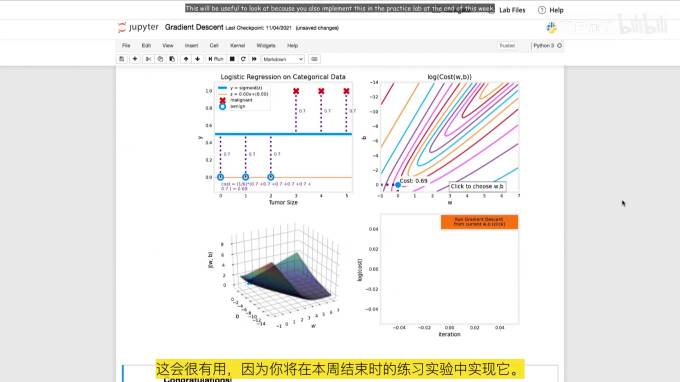
05:38在你于该实验中运行梯度下降之后，会有一系列漂亮的动画图表展示梯度下降的实际运作过程。
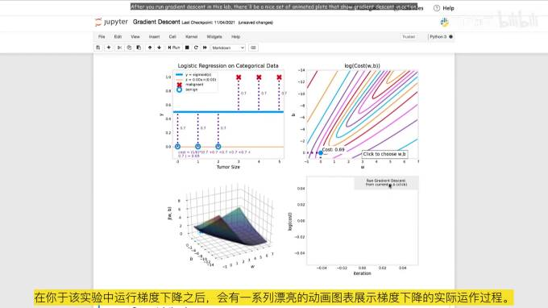

05:48你会看到 sigmoid 函数、代价的等高线图、代价的三维曲面图以及学习曲线，都随着梯度下降的运行。

06:00在那之后还有另一个选修实验，它简短而精悍，但也非常有用，因为它会向你展示如何使用流行的，车，来训练用于分类的逻辑回归模型。

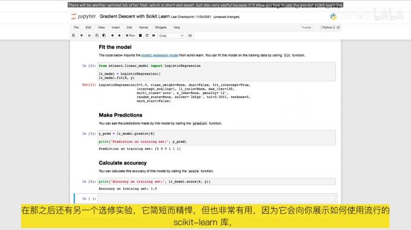
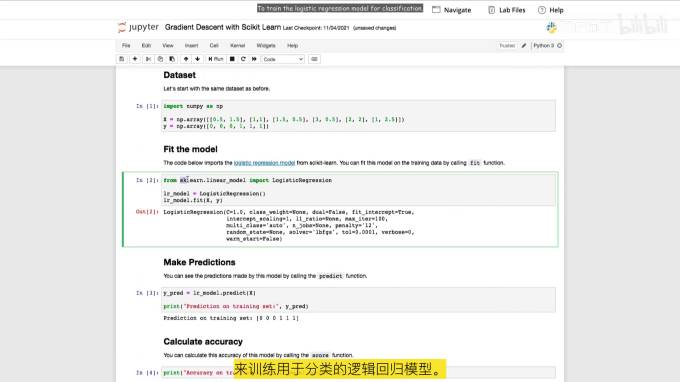
06:14当今许多公司的机器学习从业者都在日常工作中经常使用 scikit-learn。
06:21所以我希望你也能看看 scikit-learn 的这个函数，并了解它的使用方法。
06:30你现在知道如何实现逻辑回归了。
06:34这是一个非常强大、应用非常广泛的学习算法，你现在知道如何让它为你工作了。